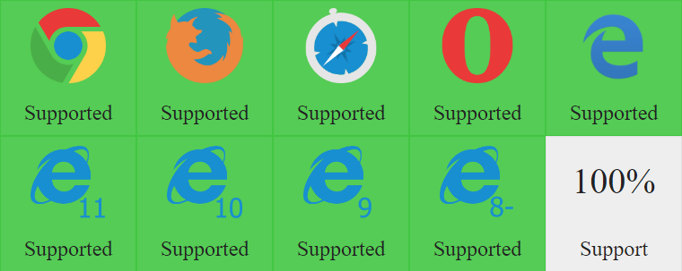

A jQuery plugin that adds the "resize" event to all elements.
window elementsHave you ever wanted to listen for a resize event on an element other than window?
This plugin listens for a resize event on any element and then triggers the resize event using jQuery so any Event Listeners will be called. Simply call the plugin on the element before adding the resize Event Listener.
Using jQuery call the resizeTriggering() method on the element before listening for the resize event, and now the resize event will work for all elements and not just the window.
$("#myElement") .resizeTriggering().on("resize", function(e){
// Code to handle resize
});
The plugin works by periodically checking to see if the elements size has changed. By default it checks every 16 milliseconds (60 fps), but you can adjust this value by setting the `$.ResizeTriggeringInterval` value.
$.ResizeTriggeringInterval = 1000; // Checks once every second
See the Pen Resize Triggering by Dustin Poissant (@AddUI) on CodePen.
Supports all major (and minor) browsers from IE7+ (all browsers supported by jQuery 1+).
